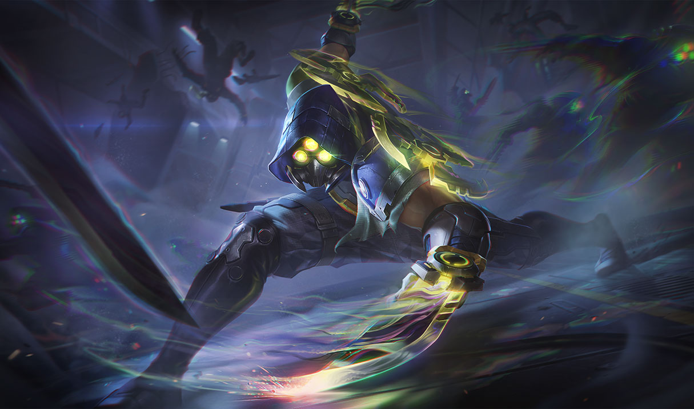

Original Zed!
Utterly ruthless and without mercy, Zed is the leader of the Order of Shadow,
an organization he created with the intent of militarizing Ionia’s magical and
martial traditions to drive out Noxian invaders. During the war, desperation
led him to unlock the secret shadow form—a malevolent spirit magic as
dangerous and corrupting as it is powerful. Zed has mastered all of these
forbidden techniques to destroy anything he sees as a threat to his nation,
or his new order.
Project Zed!
Rising from the Command Line, Zed is a leader within PROJECT's counter-
espionage units. He seeks out the G/NETIC rebels with split high frequency
blades and molecular “solid smoke” projectors, favoring close-proximity and
multiple angle target laceration.
Death Sworn Zed!
Having lived his life in the shadows, Zed's eventual return from the dead should
have come as no surprise to anyone. A master of unliving darkness, he is only
too happy to spend all eternity spilling mortal blood, as one of the Death Sworn.
Galaxy Slayer Zed!
Zed was a promising Templar before he became host to the hivemind of ora and
imbued with its alien essence. Able to morph his body into living weapons, he
now sees himself as the perfect life form, deserving of all ora and destined to
cleanse the galaxy of the weak.
PsyOps Zed!

Known as the “Gas Can Man” in paramilitary circles, Zed is an infamous
mercenary picked up by the Black Rose Group during one of their covert actions.
His psionic powers are tied to a mysterious oil-like substance he ingests through
his mask, allowing him to duplicate himself for assassinations and open combat.
Project Zed Prestige Edition!
Faced with imminent defeat at the hands of Mordekaiser and the numberless
hordes of infected machines, Zed seeks out a dilapidated research facility in the
heart of the wasteland, searching for illegal and potentially dangerous upgrades.
His return may mark a tipping point in the battle for the City… though he has
transformed into something beyond both human and machine.
Debonair Zed!
The most powerful (and powerfully dressed) man in Nox Vegas, Zed has been
dabbling in more than fancy parties and cutthroat dealmaking. A new crowd from
Crime City has entered his inner circle, granting this debonair gentleman an
unbreakable stranglehold over the strip… and a dreadful new change in both
mind and body.